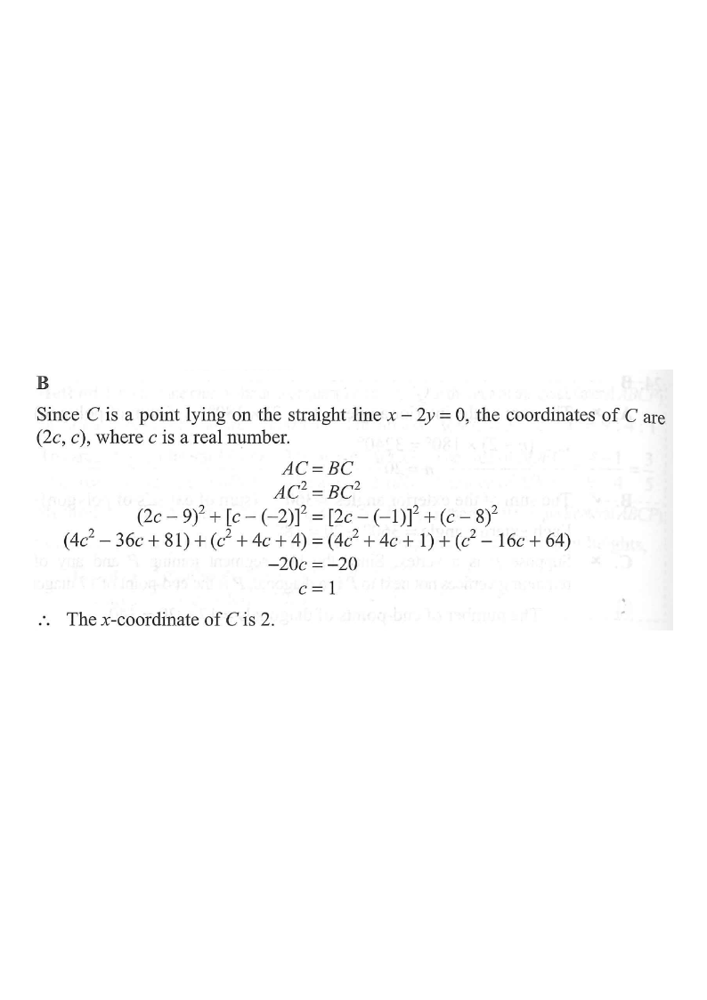

DSE 2016 · 卷二 · Q26
把「$AC=BC$」變成垂直平分線
坐標幾何 · 軌跡 · 兩點距離
題目
點 $A$、$B$ 的坐標分別為 $(9,-2)$ 及 $(-1,8)$。若 $C$ 為直線 $x-2y=0$ 上的一點，使 $AC=BC$，則 $C$ 的 $x$ 坐標為
A
$1$
B
$2$
C
$3$
D
$4$
題解
x
y
A(9, −2)
B(−1, 8)
C(2, 1)
x − 2y = 0
圖：$A(9,-2)$、$B(-1,8)$，$C$ 在 $x-2y=0$ 上且 $AC=BC$，故 $C(2,1)$（題解繪）

圖：題解附圖（原試卷）
第 1 步
設 $C$ 的坐標
代入直線
$C=(2c,c)$
$x-2y=0$ 即 $x=2y$，所以 $y$-坐標設為 $c$ 時，$x$-坐標是 $2c$。
由 $x=2y$，設 $C=(2c,c)$，其中 $c$ 為實數。 條件 $AC=BC$ 等價於 $AC^{2}=BC^{2}$（避免開方）。
第 2 步
展開兩邊距離平方
距離公式
$AC^{2}=(2c-9)^{2}+(c+2)^{2}$
$A=(9,-2)$，故 $y$ 方向差是 $c-(-2)=c+2$。
\[AC^{2}=(2c-9)^{2}+\left[c-(-2)\right]^{2} =(4c^{2}-36c+81)+(c^{2}+4c+4).\] \[BC^{2}=\left[2c-(-1)\right]^{2}+(c-8)^{2} =(4c^{2}+4c+1)+(c^{2}-16c+64).\]
第 3 步
令兩式相等
解方程
$5c^{2}-32c+85=5c^{2}-12c+65$
兩邊的 $c^{2}$ 項互相抵消，剩下一條一次方程。
\[-32c+85=-12c+65 \ \Longrightarrow\ -20c=-20 \ \Longrightarrow\ c=1.\] 所以 $C=(2,1)$，$x$ 坐標為 $2$，答案為
B
。
捷徑：$AC=BC$ 表示 $C$ 在 $AB$ 的垂直平分線上；$AB$ 中點 $(4,3)$、斜率 $\dfrac{8-(-2)}{-1-9}=-1$， 故垂直平分線為 $y-3=x-4$，即 $y=x+1$，與 $x=2y$ 解得 $C=(2,1)$。
答案
B
（$2$）
練習
同類新題
題目.
點 $A$、$B$ 的坐標分別為 $(9,-2)$ 及 $(-1,8)$。若 $C$ 為直線 $x-2y=0$ 上的一點，使 $AC=BC$，則 $C$ 的 $y$ 坐標為
A
$0$
B
$1$
C
$2$
D
$4$
顯示題解
第 1 步.
同上得 $C=(2,1)$。
第 2 步.
$y$ 坐標是 $1$。
第 3 步.
答案
B
。
答案：
B
（$1$）
‹ 上一題
目錄
下一題 ›